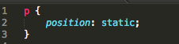
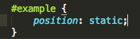
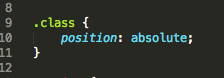
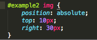

Particularly for beginner web developers, getting the elements of your website to stay put exactly where you want them can be difficult to do. Admittedly, I've pulled a couple quick fix solutions from various online forums without fully understanding what they meant and how they worked. But alas, after a bit more research, I am enlightened. Positioning in CSS is a beautiful thing, and we've got four position values to help us out.
First, we have our most basic position property value: Static. This one is simple because it works exactly as it sounds. The element with this position value will remain static. It will be where it was meant to be. Static is the default position value for all elements, so it wouldn't make sense to impose this on an element unless it was to override a position value imposed on it from elsewhere (if it were part of a class, for example). Lets test this, just so we're both certain I actually know what I'm talking about. Below, I've created a div element (the gray box), with a google logo in it:

Now lets try adding the position value of 'static' to it and see what happens:

And the result:
Nothing! Good. That's what we expected. The logo did not move because we just reiterated the default value it was already set to. What's next? Absolute!
Lets start this one right off with an example. Lets say we change our CSS so that our google logo now has a position value of absolute. Lets also go ahead and add values to the 'top' and 'right' properties, like so:
Our output looks like this:
Would you look at that! So, what happened here? Well, our logo moved to the absolute position 30px from the right of it's parent div element, and 10px down, as defined by right:30px top:10px. As you can see, the 'absolute' position value is pretty powerful - you can pretty much move that logo around in that div anywhere you'd like. But, there is one important thing to keep in mind here. The abosolute position only works like this when the parent element is also either positioned as relative or absolute. If you'd like more details on this, check out the article at the following link:
CSS-TricksSo, what about relative positioning?
Relative positioning of an element places it in a new location relative to its original location. Let's try using the same code as we did last time, the same 'top' and 'right' property values, except this time we'll change the position value to 'relative'.
And our output looks like:
Weird right? Well, lets think about it. If you recall our first example where we had static positioning, the logo was fixed in the top left corner of the gray box. Now remember, with relative positioning, we're adjusting an elements position relative to where it would have been otherwise, not relative to a different element. So, in our example above, the logo popped into a spot 30px to the right and 10px from the top of where it would have been had we not adjusted the positioning.
One more and we're done! Up next is fixed positioning.
Unfortunately, it's difficult to portray fixed positioning in a similiar example using the google logo. However, if you look up to the top of this page, you'll notice that as you scroll up and down the section with the 'home' and social media buttons does not move. That section of the page has the position value 'fixed'. The fixed position places an element in a position relative to the screen you are viewing from. So, if I were to pop that google logo in here with a fixed position, and maybe some properties like top:100px right:200px, you would see a google icon floating in the screen, fixed 100px from the top of the page, and 200px from the right side. Pretty cool, right?
I think its obvious that positioning is a very powerful capability of CSS. I certainly haven't explored the concept to the fullest extent myself, but am eager to learn more about it and to delve into some more advanced techniques.